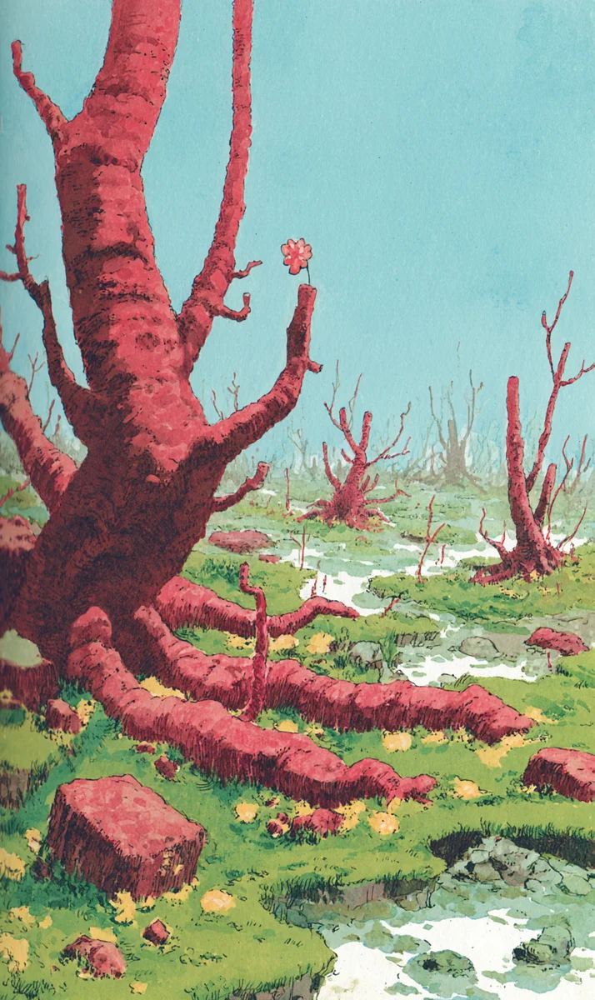

윤슬은 또 그곳에 왔다.
[Yunseul has come to that place again.]
빨간 나무들이 서 있다. 잎은 하나도 없다. 하늘은 파랗다. 아주 파랗다. 풀은 초록이다. 작은 시냇물이 흐른다. 돌도 빨갛다.
[Red trees stand. Not a single leaf. The sky is blue. Very blue. The grass is green. A small stream flows. Even the stones are red.]
윤슬은 이 숲을 잘 안다. 매일 밤 잠이 들면 여기에 온다. 십 년째다.
[Yunseul knows this forest well. Every night when she falls asleep, she comes here. It’s been ten years.]
처음에는 무서웠다. 지금은 아니다. 이제 이 숲이 집 같다.
[At first it was scary. Now it isn’t. Now this forest feels like home.]
윤슬은 천천히 걷는다. 길을 잘 안다. 나무 사이로 시냇물이 반짝인다. 발밑에서 풀이 부드럽다.
[Yunseul walks slowly. She knows the path well. Between the trees the stream sparkles. The grass is soft under her feet.]
오래된 그루터기가 보인다. 그루터기 위에 작은 꽃 한 송이가 있다. 분홍색 꽃이다. 윤슬은 매일 밤 이 꽃을 보러 온다.
[An old stump appears. On the stump there is a small flower. A pink flower. Yunseul comes every night to see this flower.]
처음 왔을 때, 꽃은 봉오리였다. 작고 단단했다. 윤슬은 시냇물을 손에 담아 꽃에 주었다.
[When she first came, the flower was a bud. Small and tight. Yunseul cupped stream water in her hands and gave it to the flower.]
다음 날 밤, 꽃잎이 하나 열렸다. 일 년 후, 또 하나 열렸다. 일 년에 한 잎씩. 아주 천천히.
[The next night, one petal opened. A year later, another opened. One petal a year. Very slowly.]
윤슬은 매일 밤 물을 주었다. 옆에 앉았다. 꽃에게 이야기했다.
[Every night Yunseul gave it water. She sat beside it. She talked to the flower.]
“오늘 회사에서 힘들었어.”
[”Work was hard today.”]
“오늘 어머니가 전화를 안 받으셨어.”
[”Mom didn’t pick up today.”]
“오늘 내 이름이 낯설었어.”
[”My own name felt strange today.”]
꽃은 듣고만 있었다. 그래도 좋았다.
[The flower only listened. Still, it was nice.]
저쪽 세상에서 윤슬은 마흔두 살이다. 혼자 산다. 작은 회사에 다닌다. 친구가 별로 없다. 가족도 멀다.
[In that other world, Yunseul is forty-two. She lives alone. She works at a small company. She has few friends. Her family is far.]
이쪽 세상에서 윤슬은 꽃의 친구다. 그것으로 충분했다.
[In this world, Yunseul is the flower’s friend. That was enough.]
오늘 밤은 다르다.
[Tonight is different.]
윤슬이 그루터기 앞에 도착한다. 꽃이 활짝 피어 있다. 마지막 꽃잎이 열렸다. 열 장 모두.
[Yunseul arrives at the stump. The flower is in full bloom. The last petal has opened. All ten of them.]
꽃이 빛난다. 분홍 빛이다. 따뜻한 빛이다.
[The flower glows. A pink light. A warm light.]
윤슬의 가슴이 두근거린다. 무엇인가 끝났다. 아니, 무엇인가 시작됐다.
[Yunseul’s heart pounds. Something has ended. No, something has begun.]
바람이 분다. 빨간 나뭇가지들이 흔들린다. 윤슬은 처음으로 소리를 듣는다. 지금까지 이 숲은 늘 조용했다. 지금은 나무들이 속삭인다.
[The wind blows. The red branches sway. For the first time, Yunseul hears a sound. Until now this forest was always quiet. Now the trees are whispering.]
“돌아왔구나.”
[”You’ve come back.”]
“드디어 돌아왔구나.”
[”You’ve finally come back.”]
“기다렸어.”
[”We’ve been waiting.”]
윤슬은 이상한 기분이 든다. 손을 본다. 손가락 끝이 빨갛다. 나무껍질 같다.
[Yunseul feels strange. She looks at her hands. Her fingertips are red. Like bark.]
놀라지 않는다. 천천히 알 것 같다.
[She isn’t surprised. Slowly, she thinks she understands.]
멀리서 소리가 들린다. 알람 소리다. 방의 알람 시계다. 일어날 시간이다.
[A sound comes from far away. An alarm. The alarm clock in her room. Time to wake up.]
지금까지 윤슬은 알람 소리를 들으면 깼다. 깨서 출근했다. 깨서 밥을 먹었다. 깨서 살았다.
[Until today, when Yunseul heard the alarm, she woke. She woke and went to work. She woke and ate. She woke and lived.]
오늘은 깨지 않는다.
[Today, she does not wake.]
윤슬은 그루터기 옆에 앉는다. 발을 흙 속에 묻는다. 흙이 따뜻하다. 발이 뿌리가 된다. 팔이 가지가 된다. 머리카락이 잎이 된다. 빨간 잎이다.
[Yunseul sits beside the stump. She buries her feet in the soil. The soil is warm. Her feet become roots. Her arms become branches. Her hair becomes leaves. Red leaves.]
알람 소리가 멀어진다. 점점 멀어진다. 사라진다.
[The alarm grows distant. Farther and farther. It disappears.]
저쪽 세상에서, 한 여자가 침대에 누워 있다. 눈을 감은 채로. 가슴이 더 이상 움직이지 않는다.
[In that other world, a woman lies in bed. Eyes closed. Her chest no longer moves.]
이쪽 세상에서, 새 빨간 나무 한 그루가 자란다. 그루터기 옆에. 꽃 옆에.
[In this world, one new red tree grows. Beside the stump. Beside the flower.]
윤슬은 십 년 동안 잘못 알고 있었다. 이 숲이 꿈이 아니다. 저 도시가 꿈이었다. 저 회사, 저 침대, 저 낯선 이름, 모두 꿈이었다.
[For ten years Yunseul had it wrong. This forest is not the dream. That city was the dream. That office, that bed, that unfamiliar name, all of it was the dream.]
이제 윤슬은 깼다.
[Now Yunseul is awake.]
꽃이 새 나무를 향해 살짝 기울어진다. 인사처럼.
[The flower leans gently toward the new tree. Like a greeting.]
하늘은 여전히 파랗다. 아주 파랗다.
[The sky is still blue. Very blue.]